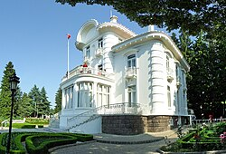
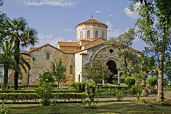

Trabzon
Trabzon, Türkiye'nin Doğu Karadeniz Bölgesinde yer alırken aynı zamanda Karadeniz'e kıyısı bulunur. Bölgenin coğrafi yapısından kaynaklı yüksek yağış oranına sahiptir. Günümüzde bölgede Samsun'dan sonra ikinci en büyük kenttir. Tarihte birçok çağdan yaşam izleri barındıran şehir, özellikle Roma ve Osmanlı dönemlerinde günümüzdeki kültürel ve mimari yapısını oluşturmuştur. "Şehzadeler şehri" olarak anılan bu şehir için Evliya Çelebi şöyle demiştir: "Bu şehre küçük İstanbul denilse yeridir. İrem bağları gibi süslü bir şehirdir burası."

Atatürk Köşkü
Soğuksu semtinde çam ormanları içerisinde yer alan bu zarif köşk, 19. yüzyılın sonlarında inşa edilmiştir. Avrupa mimarisinin izlerini taşıyan yapı, Mustafa Kemal Atatürk'ün Trabzon'u ziyaretlerinde konakladığı ve vasiyetini yazdığı yer olarak hem tarihi hem de manevi açıdan büyük bir öneme sahiptir.

Ayasofya Camii ve Müzesi
13. yüzyılda Trabzon İmparatorluğu krallarından I. Manuel Komnenos döneminde inşa edilen Ayasofya, Geç Bizans kiliselerinin en güzel örneklerinden biridir. Taş işçiliği, kabartmaları ve içindeki tarihi freskleriyle dikkat çeken yapı, Trabzon'un çok kültürlü tarihi geçmişinin en canlı şahitlerindendir.

Sümela Manastırı
Altındere Vadisi'nin nefes kesici manzarasına hakim, sarp bir kayalığa oyulmuş olan Sümela Manastırı, adeta yerçekimine meydan okur. 4. yüzyılda kurulduğuna inanılan bu efsanevi yapı, zengin freskleri ve eşsiz mimarisiyle sadece Türkiye'nin değil, dünyanın da en önemli inanç turizmi merkezlerinden biridir.

Uzungöl
Trabzon'un doğal güzellikleri denilince akla ilk gelen yer şüphesiz Uzungöl'dür. Haldizen Deresi'nin önünün heyelan sonucu kapanmasıyla oluşan bu set gölü; dik yamaçları, sık çam ormanları ve temiz havasıyla ziyaretçilerine huzur dolu bir doğa deneyimi sunar.